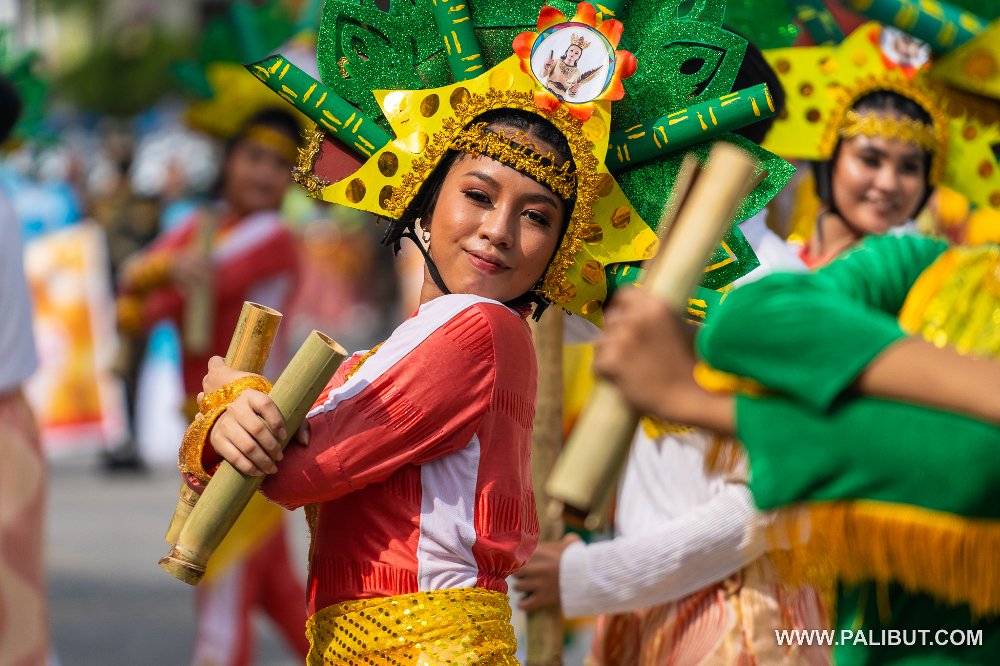
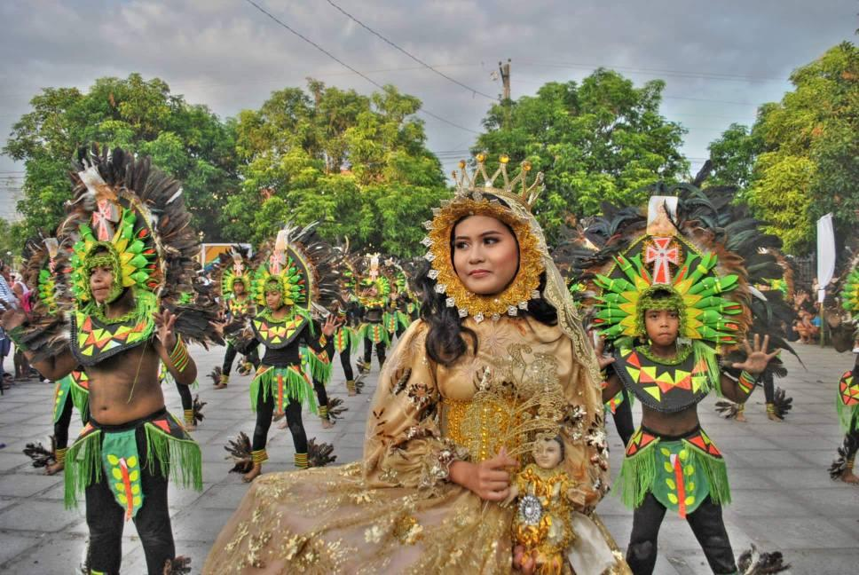

Kampampangans are the people of Pampanga and are the sixth largest ethnolinguistic group in the Philippines. Their culture is rich and full of grand traditions, and are known for having a strong sense of pride for Pampanga.

The Sinukwan festival is a yearly celebration held in honour of Aring Sinukwan, believed to be the protective deity of Pampanga. The festival explodes in a week-long celebration of street dancing, parades, music, artistry, and delicacies. It honours Kampampangan culture and showcases the deep regional pride of Kampampangan people.

The Makatapak festival, meaning ‘barefoot’ in Kampampangan, is a yearly tradition held in Bacolor, Pampanga. The festival is held in remembrance of the 1991 volcanic eruption of Mount Pinatubo, which forced civilians to flee from their villages while barefoot. The festival symbolises resilience and the hardships of the people during crises and disaster, and the community